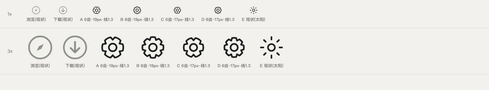
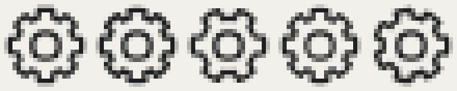

SmartDownloader iOS · 纸墨双轨 · 画布文件 746972112461422 · 评审对象：tab 栏「设置」齿轮 + 「我的」页右上角按钮
一句话结论：当前 tab 栏「设置」图标不是「糊」，而是构型错误——它是「中心环 + 8 根放射短线」，按定义就是太阳/星芒符号；真实齿轮靠的是闭合齿廓。改为 8 齿闭合轮廓后，1x / 3x 实测均清晰可辨，不需要降到 6 齿；同时「我的」页右上角那枚按钮必须换语义，因为它现在与左边的新月并排，会被读成「暗 / 亮」外观切换对，而 App 里已经有一个外观开关了。
状态（2026-11-14）
gear-settings-tab.svg 的几何替换画布 5 处（下载中页 tab、已下载页 tab、我的页 tab 选中态、浏览页 tab、我的页右上角按钮），实测渲染为清晰可辨的 8 齿 cog，中心孔完整、无断线无色块。本文档 §2 的参数即落地依据。| 流传说法 | 实测结论 |
|---|---|
| 「8 齿在 17px 会糊成黑饼」 | 不成立。用闭合齿廓实测：1x 最窄白通道 2px、中位 3px；3x 最窄 2px、中位 9px。糊的真正原因是放射线与中心环不相连（那是太阳），不是齿数。 |
| 「6 齿是下限 / 必须降齿」 | 反了。6 齿渲染出来是花瓣（见下方对比图 V3），比 8 齿更不像齿轮；8 齿才读作 cog。 |
| 「右上角齿轮只是和 tab 重复」 | 更严重：它与左侧新月构成语义冲突（见 §1）。 |

ellipsis.circle，点击弹出 sheet（标题写「我的偏好」），不要跳转到设置 tab 页，两处入口不得指向同一目的地。sheet 内可放：个人资料 / 存储占用 / 下载记录入口。slider.horizontal.3（滑杆在 iOS 语境强指向「筛选/参数」，在「我的」页语义过窄）；更不建议：保留两枚齿轮。person.crop.circle 与身份行最左侧已有的 34×34 头像（node 19:90）构成一行两个人形图形，比两枚齿轮更易误读 —— 若选它，建议改为一个无人物的入口（如 `list.bullet` / `person.text.rectangle`）；② chevron.right 表达「进入下一级」而非「打开面板」，放在导航栏右上角不符合 iOS 惯例（chevron 通常在列表行右侧），且必须让该二级页的标题与「设置」tab 页明确区分，否则两条路径仍会收敛到同一目的地。.accessibilityLabel("切换到墨本") 之类的状态化文案。用真实像素渲染（Chrome headless，@1x 与 @3x）逐一测量「相邻墨迹之间的最窄白色通道」：
| 候选 | 构造 | 1x 最窄通道 | 3x 最窄通道 | 判读 |
|---|---|---|---|---|
| V1 | 8 齿 · 齿高 2.0 · 描边 1.3 | 2px（中位 3px） | 1px（中位 9px） | ✓ 清晰 |
| V2 | 8 齿 · 齿顶加宽 | 2px | 2px | ✓ 齿偏钝 |
| V3 | 6 齿 · 窄齿宽谷 | 2px | 1px | ✗ 读作花瓣 |
| V4 | 8 齿 · 描边 1.2 | 2px（中位 3px） | 2px（中位 9px） | ✓ 最清爽 |
| V5 | 7 齿 | 2px | 2px | ✓ 但奇数齿视觉不匀 |
| 现状 | 中心环 + 8 放射短线 | 2px | 6px | ✗ 是太阳 |

可直接落地的路径（中心 11,11；已带 round join）
gear-settings-tab.svg，同目录。描边色替换为 #1C1E1F / #5A5F60 即可换态。
为什么 8 齿不糊：齿顶弧宽 3.6px、齿隙 1.6px，1.3px 描边只吃掉齿隙两侧各 0.65px，仍留 ≈2px 纯白通道。而现状的「放射线」结构里，中心环与放射线之间本就留了 2.4px 白 —— 它不糊，它本来就是太阳。
把画布上三枚图标按实际路径拆开（导出的 SVG 原文）：
| 图标 | 外廓 | 中心元素 | 中心处理 | 问题 |
|---|---|---|---|---|
| 浏览 | 圆环 Ø18，描边 1.3 | 罗盘针 Ø5.6 | 实心填充 | 违反「单色线性、无填充」 |
| 下载 | 圆环 Ø18，描边 1.3 | 下箭头 7×8.5 | 描边（等效 1.5） | — |
| 设置 | 无外廓环 | 中心环 Ø5.6 + 8 放射线 | 描边 + 实心 | 缺外廓、语义族混用 |
最刺眼的一处：「设置」的 Ø5.6 中心环，与「浏览」的 Ø5.6 实心针同尺寸、同坐标（8.2, 8.2） —— 看上去像「浏览图标的缩小版」，这是「两枚图标其实长得像」错觉的直接来源。
补充：08 浏览页那份 tab 栏（node 22:341/22:353）的图标—文字间距是 gap: 3，其余三份是 gap: 4，顺手统一。
代码侧已固定为 MainTab.icon：safari.fill / arrow.down.circle / gearshape，渲染点为 App.swift:123 的 Image(systemName: tab.icon).font(.system(size: 20))。差异清单：
| 项 | 画布稿 | 代码真机 | 说明 |
|---|---|---|---|
| 尺寸 | 22×22 容器 / 17px 图形 | 20pt 视口，SF 自带光学留白，gearshape 字形约 19pt | 画布比真机小 2–3px，评审时看到的「糊」会被低估 → 画布容器改 20×20、图形光学 Ø18–19、描边 1.3 |
| 齿数 | 8 | gearshape = 8 齿 | 一致 ✓（若画布定 6 齿则两端不符，须在注释写明以代码为准） |
| 实心度 | 浏览 = 线性罗盘 | safari.fill = 填充圆盘 + 白色指针 | 画布低估了浏览图标的墨量；这是三枚里最大的实心度落差 |
| 线宽 | 1.3 | SF Regular @20pt 约 1.5–1.6pt | 画布按 1.3 画即可（略细更贴纸墨），但落代码后会更粗一点，评审时留余量 |
| 接头 | 自绘 | SF 圆端圆角 | 画布稿务必用 round join / round cap，否则换 SF 后观感变硬 |
| 颜色 | 墨阶手填 | .foregroundStyle 吃 tint | 纸墨轨需新建 token；当前 DWColor 还是旧紫黑主题（#0A0A0F），不是纸墨 |
落代码 = Image(systemName:"gearshape").font(.system(size:20)) · 自绘路径不交付。systemName —— 否则 MainTab.icon 这个字符串契约要改，代码侧要同步。2:179、19:353、22:356、22:160（tab 栏 4 份）+ 24:1（顶栏 1 份）；配套的中心环 2:178 / 19:352 / 22:355 / 22:159 / 24:2 也要一起换。#8C9190 压在纸本 #F2F0EA 上只有 2.81:1。tab 标签是 10px 文字（需 ≥4.5:1）、图标是理解内容所必需（需 ≥3:1），两条都不过。→ 未选中图标与文字统一改 重墨 #5A5F60（5.77:1 ✓）；淡墨只留给分隔线（细线应使用清墨 #C4C7C3）。选中态焦墨 #1C1E1F = 15.6:1 ✓。#1C1E1F 压在墨本 #14171A 上 = 1.01:1（等于隐形）。纸墨双轨下墨阶要整体反相：墨本选中用纸本 #F2F0EA / 清墨 #C4C7C3，未选中用淡墨 #8C9190（对 #14171A 为 5.63:1 ✓）。.frame(minWidth:44,minHeight:44) + .contentShape(Rectangle())）；tab 三项同样处理。两枚同名控件（改完只剩一枚则无此问题）；齿轮按钮加 .accessibilityLabel("设置")，夜间按钮加状态化文案；选中态用 .accessibilityAddTraits(.isSelected) 而非只靠颜色 + 朱砂点（朱砂点仅作冗余线索，符合「朱砂仅标选中」规则）。.caption2（随 Dynamic Type 缩放），画布 10px 固定值不能代表大字模式 —— 建议真机跑一次 AX5（最大字号），确认三枚图标不因文字变大而顶出 47px 的 MainTab.barReservedHeight。把「设置」图标重画成 8 齿闭合齿轮（22×22 容器内：R_tip 8.7 / R_root 6.7 / 齿顶弧 24° / 齿侧 3.5° / 中心孔 r 3.2 / 描边 1.3 / round join），同步把「浏览」的实心罗盘针改成描边以统一线性家族，未选中态改用重墨 #5A5F60，并把「我的」页右上角那枚齿轮直接删除（或换成「更多」ellipsis.circle 弹 sheet）—— 画布图标一律标注为占位稿，落代码统一使用 SF Symbol（设置 = gearshape，20pt）。